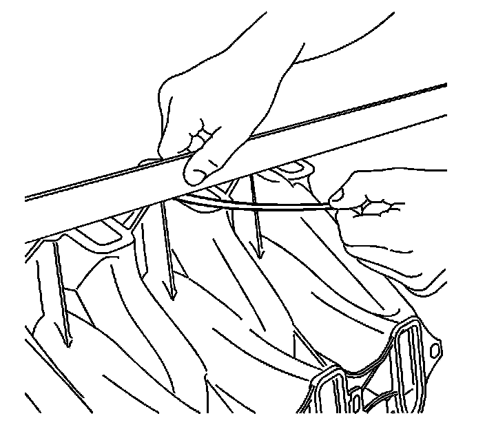

62. Intake Manifold Cleaning and Inspection
Intake Manifold Cleaning and Inspection
Cleaning Procedure

1. Remove and discard the intake manifold-to-cylinder head gaskets (514).

2. Remove the manifold absolute pressure (MAP) sensor (714). Refer to Intake Manifold Removal.
3. Remove the evaporative emission (EVAP) canister purge solenoid valve, EVAP tubes, and fuel rail with injectors. Refer to Fuel Rail and Injectors Removal.
4. Remove the throttle body and gasket.
5. Clean the intake manifold (500) in solvent.
Caution: Refer to Safety Glasses and Compressed Air Caution.
6. Dry the intake manifold with compressed air.
Inspection Procedure
1. Inspect the manifold for the following conditions:
^ Damaged gasket or sealing surfaces
^ Loose threaded inserts or studs
^ Debris or restrictions within the passages of the manifold
^ Damaged or broken vacuum fittings
^ Inspect the composite intake manifold assembly for cracks or other damage.

2. Inspect the intake manifold cylinder head deck for warpage.
1. Locate a straight edge across the intake manifold cylinder head deck surface.
Position the straight edge across a minimum of two runner port openings.
2. Insert a feeler gage between the intake manifold and the straight edge.
An intake manifold with warpage in excess of 3 mm (0.118 in) over a 200 mm (7.87 in) area is warped and should be replaced.